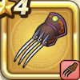

黒ヒョウのツメ
攻略班 5.0点 / ウィングブロウせいけんづき裂鋼拳
くわしい特徴
【レベル別習得スキル】 Lv1ウィングブロウ（消費MP：3）風のやいばで敵1体に威力65%のバギ属性体技攻撃を2回する Lv8せいけんづき（消費MP：7）腰を落としてまっすぐ拳で突き、敵1体に威力180%の体技ダメージを与える Lv20裂鋼拳（消費MP：12）マシン系に威力180%、それ以外の系統には120%の斬撃攻撃を2回する Lv28物質系へのダメージ+10% Lv36攻撃時+2%の確率で麻痺を与える Lv40攻撃力+8 【限界突破スキル】 1凸スキルの斬撃・体技ダメージ+5% 2凸スキルの斬撃・体技ダメージ+5% 3凸スキルの斬撃・体技ダメージ+5% 4凸スキルの斬撃・体技ダメージ+5%